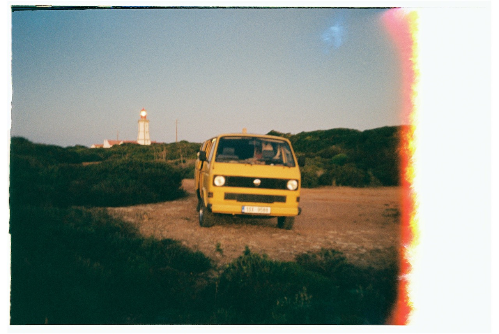
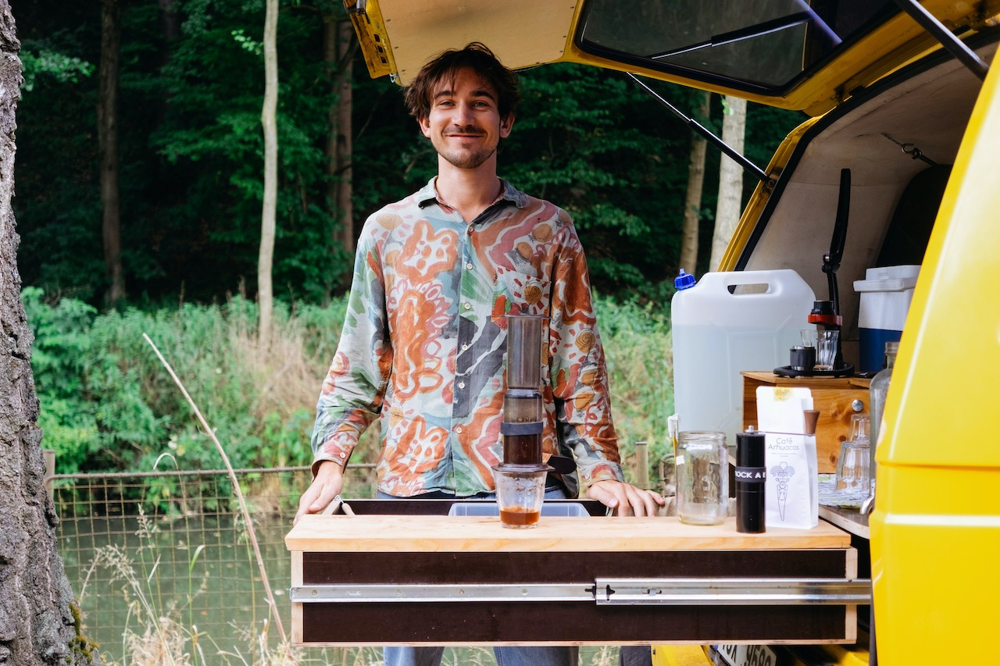
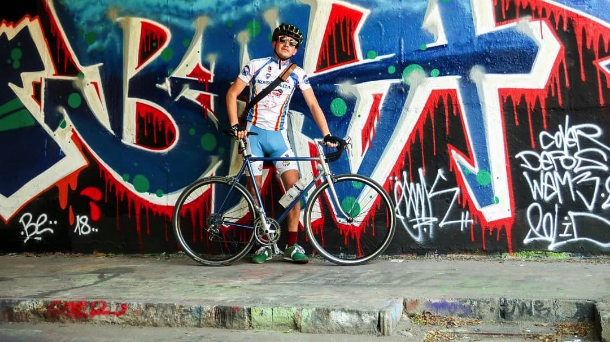
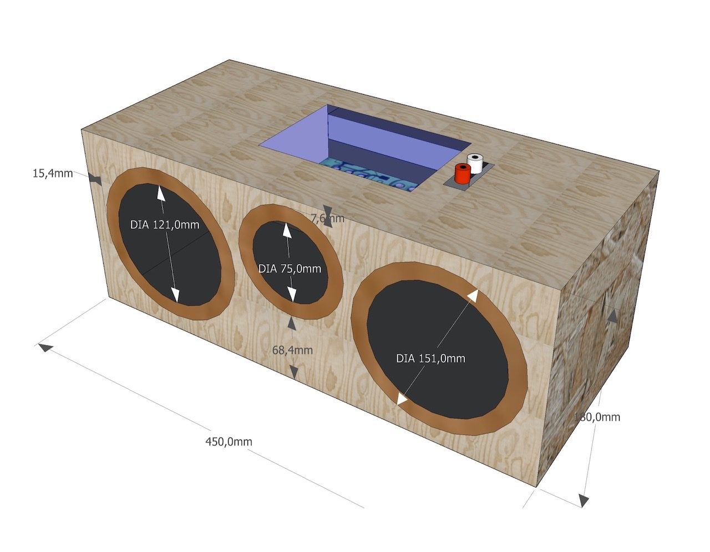
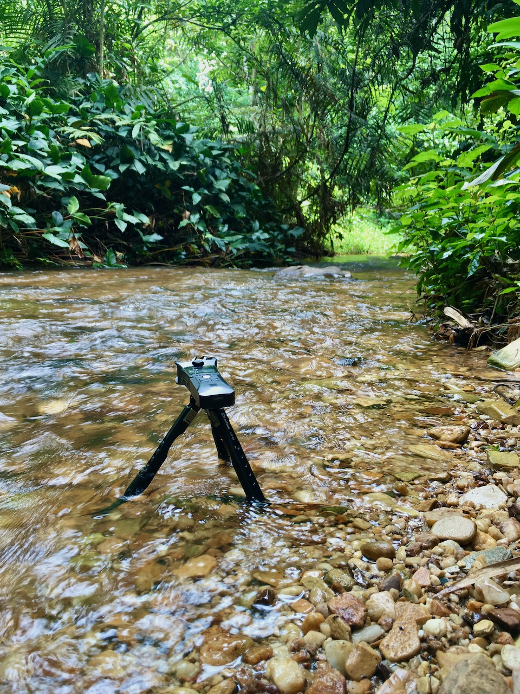
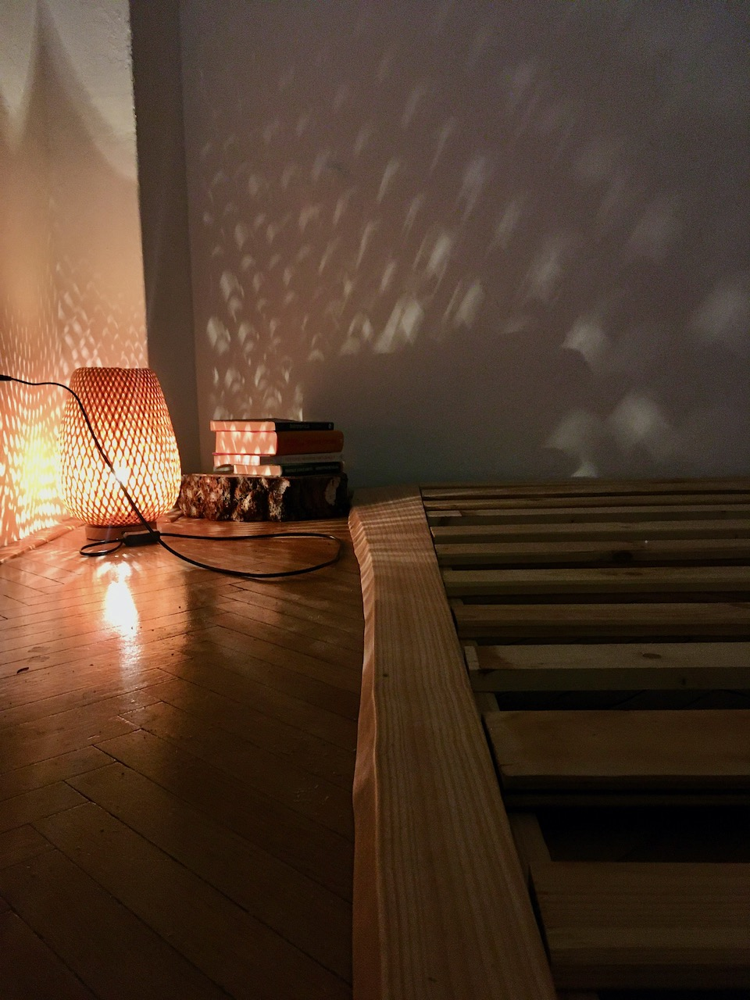
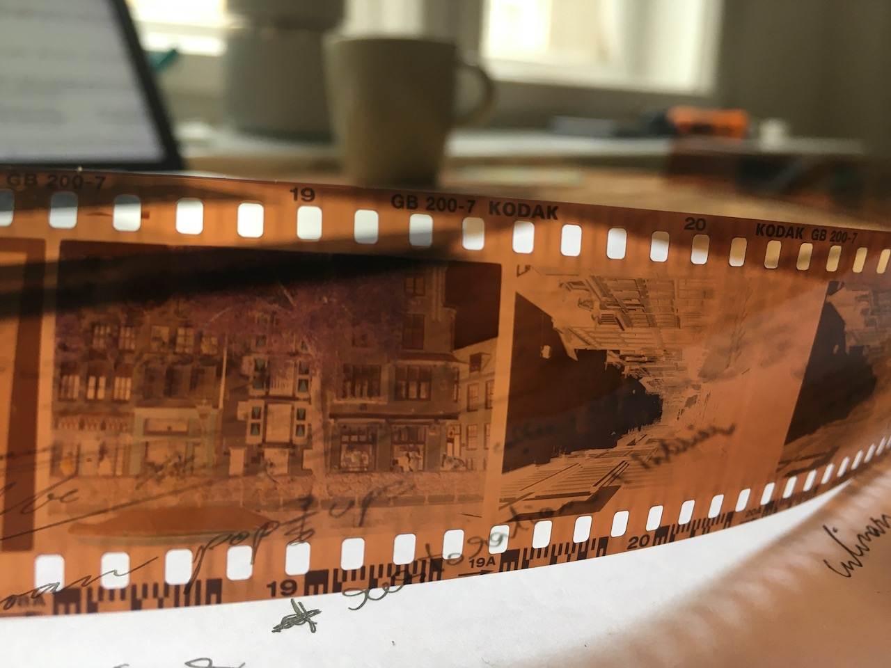
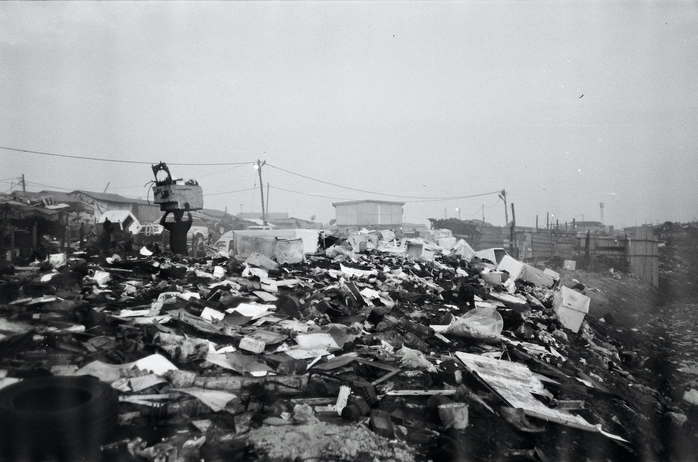

JAKUB VELFL | PROJECTS



1986 vw bus - dobrodruh
from restoration to home on wheels

#vankarawan pop-ups
apple cidre x coffee x cold brew

favorit f12 rebuild
10 speed gravel-ready machine

sound systems
passion or obsession?

soundscapes
sounds of nature landscapes

do it yourself
hobby projects

analog photography
capturing present moments
